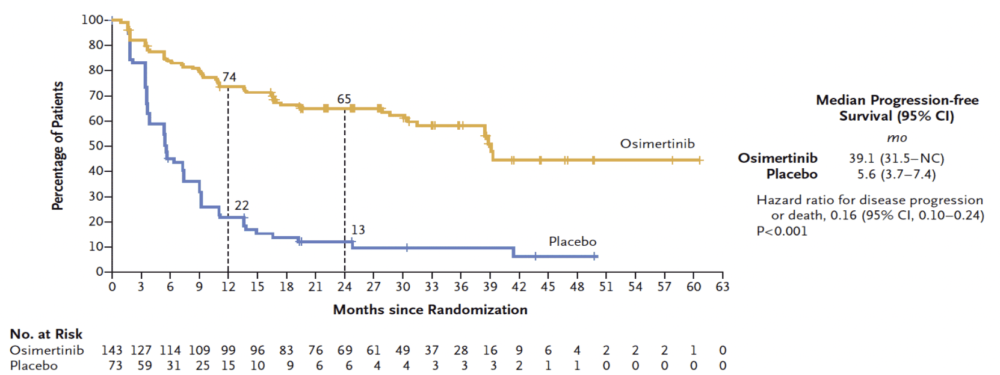
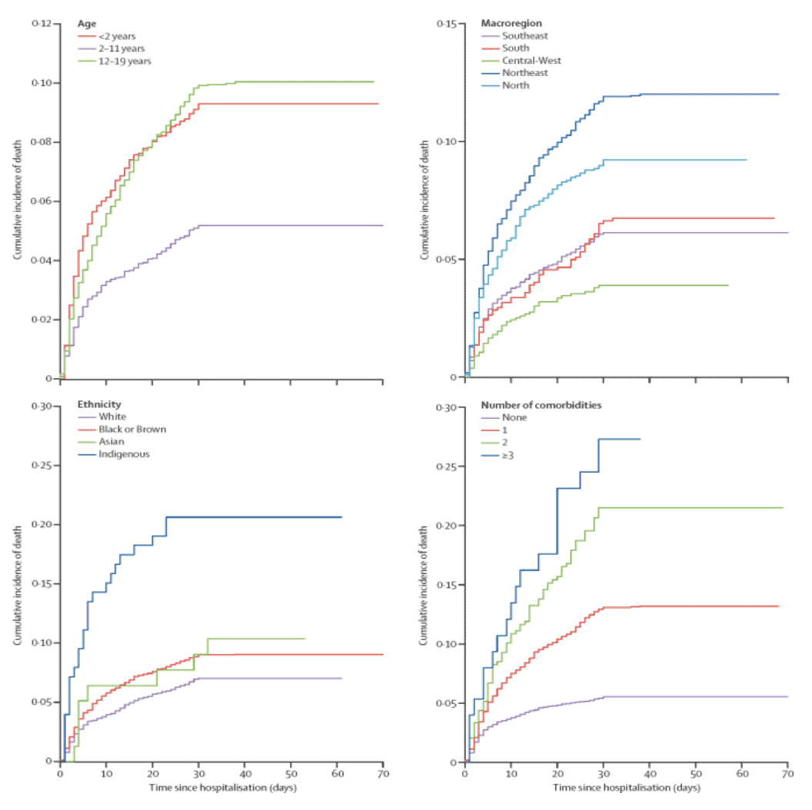
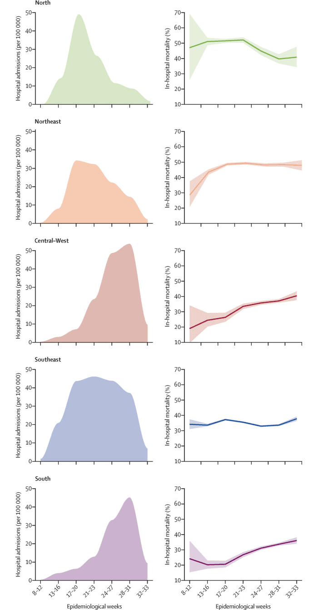
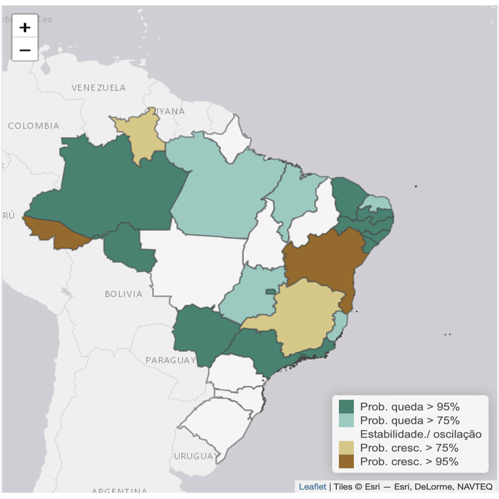

Módulo 3 | Aula 4
Aplicação dos modelos estatísticos
Exemplo práticos dos modelos estatísticos
Os diversos tipos de modelos (estatísticos, matemáticos e computacionais) fornecem informações distintas e complementares para a compreensão de um fenômeno. Quando possível, o uso de múltiplas abordagens para responder a uma pergunta na área da saúde deve sempre ser incentivado, uma vez que torna mais robusta a evidência fornecida.
Os modelos estatísticos são os mais aplicados em relação aos dados da saúde, incluindo estudos observacionais, aqueles em que o pesquisador não interfere com os participantes, tanto quanto em estudos experimentais, em que os pesquisadores interferem com os participantes, definindo qual deles irá receber o tratamento ou não.
Durante o processo de desenvolvimento de um novo medicamento são realizados estudos experimentais, o conhecido ensaio clínico randomizado (ECT). Esses estudos são analisados utilizando-se um modelo estatístico, uma vez que o objetivo do ECT é, por exemplo, descrever as diferenças nas distribuições do desenvolvimento de uma doença entre o grupo tratado e não tratado (placebo). Isto é, descrever a relação observada nos dados.
Por exemplo, o estudo Osimertinib after Chemoradiotherapy in Stage III EGFR-Mutated NSCLC (Lu et al., 2024) avaliou 216 pacientes com câncer de pulmão de células não pequenas em estágio avançado; desses, 143 receberam o novo tratamento (Osimertinib) e 73 receberam o tratamento padrão para essa doença. Na análise estatística foi encontrada uma redução no risco de progredir ou ir a óbito de 84% no grupo tratado, como visto na figura a seguir, que foi extraída do artigo.

Estudos randomizados usualmente podem ser analisados com facilidade, devido ao balanceamento de fatores confundidores medidos e não medidos. Contudo, no caso de estudos observacionais, por exemplo, utilizando-se dados do sistema de informação do Brasil, é necessário utilizar modelos para tentar balancear os fatores confundidores nos dois grupos. Por exemplo, o estudo Clinical characteristics and risk factors for death among hospitalised children and adolescents with COVID-19 in Brazil: an analysis of a nationwide database utilizou um modelo com múltiplas variáveis, tais como: idade, sexo, região de residência, presença de comorbidades, entre outros.

O estudo Characterisation of the first 250 000 hospital admissions for COVID-19 in Brazil: a retrospective analysis of nationwide data (Ranzani et al., 2021) utilizou os dados disponíveis do mesmo estudo envolvendo crianças e adolescentes para caracterizar as primeiras hospitalizações por covid-19 no Brasil. Na figura a seguir, extraída do artigo, é possível ver a descrição da mortalidade hospitalar nas cinco regiões do Brasil, diferentemente do primeiro exemplo, quando foi avaliada a diferença entre dois grupos. Nesse caso, é avaliada apenas a distribuição da mortalidade hospitalar por região geográfica e semana epidemiológica.

Seria impossível listar todas as possíveis aplicações dos modelos estatísticos no estudo de dados da saúde. Porém, vamos ver mais dois exemplos da aplicação de modelos estatísticos utilizando os dados disponíveis no Datasus.
Outro exemplo similar que utiliza modelagem estatística, agora com o intuito preditivo, é o InfoGripe, conforme a imagem a seguir.

No Info Gripe, um modelo utilizando o número de casos de síndrome respiratória aguda e informações como tempo entre início dos sintomas e notificação do caso, sazonalidade da doença, entre outros é feito com o intuito de predizer se haverá aumento no número de casos nas semanas seguintes ou não.
Faça você mesmo!
É hora de praticar! No script modulo3aula4_atividades_v2.R, aplique os modelos estudados em três casos práticos de saúde pública:
- Caso 1: Fatores de risco para COVID-19 grave usando regressão logística e Forest Plot.
- Caso 2: Comparação de tratamentos em ensaio clínico usando ANOVA e teste de Tukey.
- Caso 3: Sobrevida em pacientes oncológicos usando Kaplan-Meier e modelo de Cox.